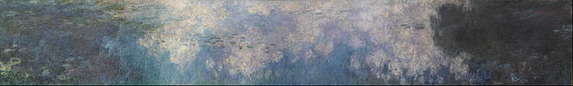
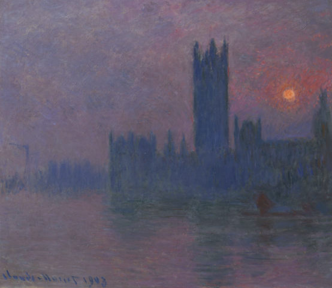
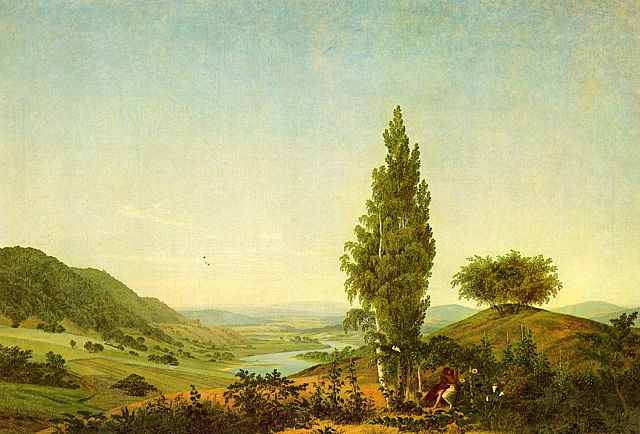
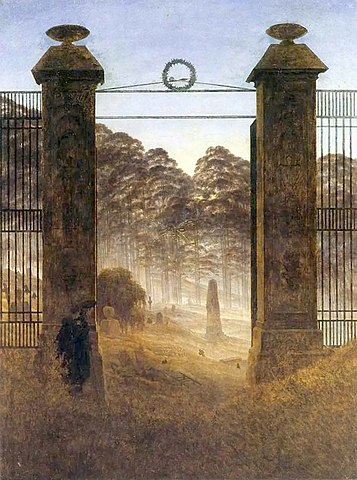

ArtGallery
Claude Monet | Tulip fields in Holland | Impressionismus | 1886

Claude Monet | The Water Lilies - The Clouds | Impressionismus | 1915-26

Claude Monet | The Parliament - Sunset | Impressionismus | 1903
Caspar David Friedrich | Hill and ploughed field near Dresden | Romantic landscape | 1824

Caspar David Friedrich | The Summer (Landscape with Couple) | Romantic landscape | 1824

Caspar David Friedrich | The Cemetery Entrace | Romantic landscape | 1825